可持续发展
可持续发展是我们愿景和价值观所不可或缺的组成部分。我们与携手相关合作伙伴一起保护环境、合理使用资源并改善生活品质，通过我们提供的解决方案、我们对社会的奉献、我们开展业务的方式以及我们对保护人民和环境的承诺让世界变得更加美好。
可持续发展是我们愿景和价值观所不可或缺的组成部分。我们与携手相关合作伙伴一起保护环境、合理使用资源并改善生活品质，通过我们提供的解决方案、我们对社会的奉献、我们开展业务的方式以及我们对保护人民和环境的承诺让世界变得更加美好。
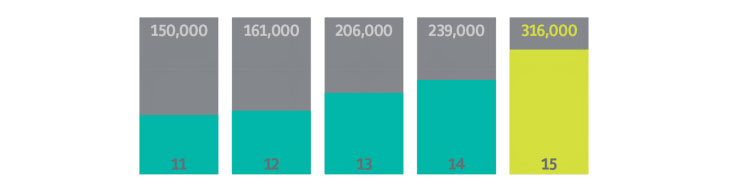
志愿服务时间（蓝天计划 、社区参与计划 和全球高管参与和指导计划 ）
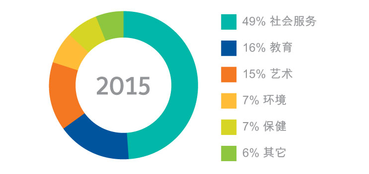
2015年江森自控为地区捐赠了1450万美元
蓝天计划是江森自控在全球范围内发起的一项志愿者计划，旨在鼓励员工组成志愿者小组和当地的非营利组织或学校合作以支持环境管理或社会服务工作，同时发展其领导能力。每个合作机构都将获得1000美元的补助金，用于与我们的员工共同规划的志愿者项目。2014年，15400名员工组成了1000个项目团队，并参加了151, 369 个小时的志愿服务，他们选定的慈善机构或学校共获得了100万美元的补助金。自2006年启动蓝天计划以来，江森自控集团的员工已经参与了7000多个项目，在当地社区的志愿服务时间总计已达973,936个小时。
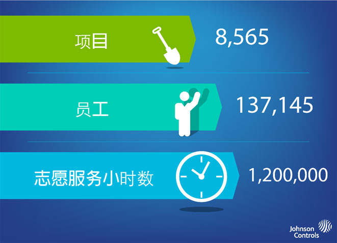
香格里拉的天空，蓝的纯粹而通透，斯那从木就在这片天空下生活了十六年。她爱这片蓝天，这里的高山湖泊，雪山峡谷，她的梦想是成为一名摄影师记录这一切的美好。可是梦想的丰满也不能撑起当下骨感的现实。父母亲都是农民，家庭所有的收入来自于几块不大的田地。父亲的糖尿病使主要的体力活都落在了母亲的肩头上，每月的医药费也使这个本已局促的家庭更加捉襟见肘。斯那从木和姐姐很珍惜自己的学习机会，可是成绩优异的姐妹俩依然时刻面临着因学费问题而不得不退学的风险。
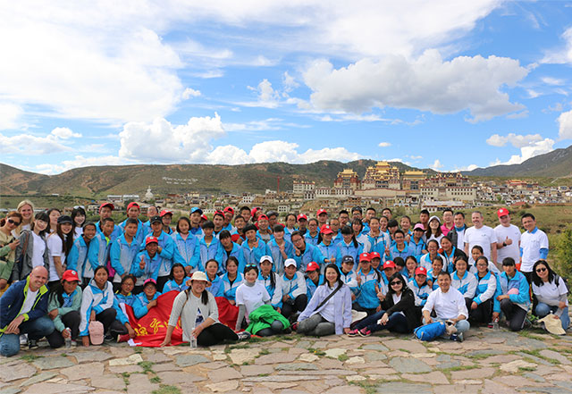
这只是香格里拉迪庆民族中学里一个贫困学生的故事，几百个故事中的一个。学校有96%的学生都是少数民族，很多人都来自年收入不到300美元的家庭，他们大多数都没有足够的食物或衣服过冬，更鲜有机会能获得各样的书籍来了解大山外的世界。
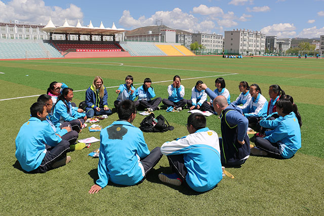
今年五月，来自江森自控的18名志愿者再次来到香格里拉迪庆州民族中学，这是江森自控蓝天计划牵手迪庆州民族中学的第七个年头了。从资助学生完成三年的高中学业，帮助完善学校的图书馆书籍，带去各样体育用品丰富学生们的课余生活，到每次精心筹划一天与孩子们的交流活动，志愿者们聆听孩子们的故事，分享自己的经历，努力用沟通和关爱逐渐搭起孩子们通往理想的桥梁。
六年来，江森自控志愿者小组发起并参与了如下志愿活动：
·自2010年起，每年资助迪庆民族中学的40名学生，资助学生的教育费用并造访学校与他们交流。该活动深受学校和江森自控各部门志愿者们的欢迎。员工们积极响应，提供捐赠和帮助。在他们的帮助下，大多数来自贫困家庭的学生得以进入大学深造，去追求他们的梦想。
·六年来每年向学校捐赠大量体育器材、图书、文具、CD等物资。
·每年亲历亲为探访学生并组织各种交流活动，帮助学生开拓眼界，启发思想。
·每年有越来越多的志愿者参与资助贫困学生，近三年江森自控的志愿者们还自发额外赞助了24位学生。
·每年向学生捐赠200个风筝。对他们中的许多人来说，这是他们第一次放风筝。
·清洗独克宗和松赞林寺，这两个都是千年古迹，不幸的是，独克宗古城在2014年遭到了火灾损坏。
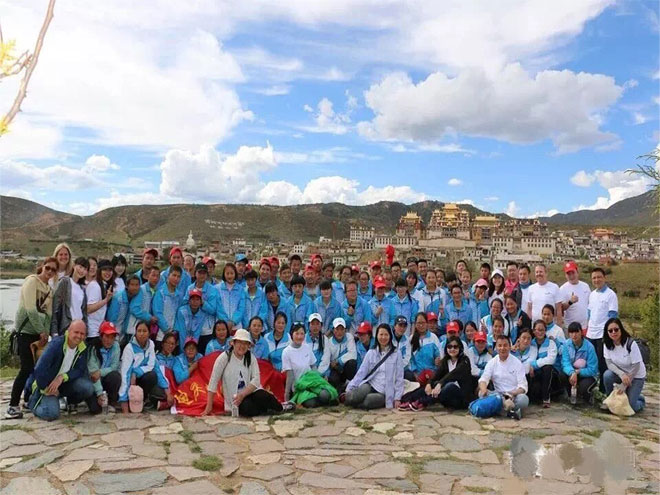
2015 年，江森自控为此处提到的地区捐赠了 1450 万美元。 江森自控基金会（Johnson Controls Foundation）为致力于社区完善的美国非营利组织捐赠超过 860 万美元。 我们还支持全球救灾计划，向美国红十字会“年度灾难捐赠计划”做出了五年内捐赠250万美元的承诺，这使我们跻身成为救灾捐款额最高的企业。
正如 江森自控 总裁兼首席执行官 Alex Molinaroli 所言：“世界始终在不断变化。 在未来，我们如何工作、在哪儿工作以及我们与谁合作，这些都会发生巨大变化。 不再是 企业对企业（B2B） 或企业对消费者（B2C）的模式，而是人对人（ H2H）的模式： 人对人。 在多元化方面则更是如此。” 江森自控致力于引领行业兼容并蓄的文化；这是我们客户所期望的，对于业务成功也至关重要。
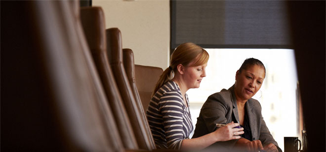
我们通过责任制建立起多元包容的企业文化，包括对指标和工作表现进行定期行政审核，诸如指导/辅导、领导力培养、继任管理和多元化领导力峰会 全球女性高管占到 22%。 少数族裔在美国占到 17%。
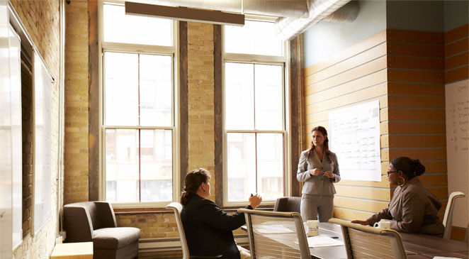
我们有九个业务资源团体，在全球拥有 40 个分会。这些组织将经验或个性相似的员工联系在一起，促进个人发展、保持包容的工作环境并提高业务成效。 存在 面向非洲裔美国人、亚裔、西班牙裔、新兴领导人、LGBTQ 人群、具有有形和无形残障的人群、退伍军人和女性的团体。 这些团体向所有员工开放，并且充当战略业务合作伙伴。
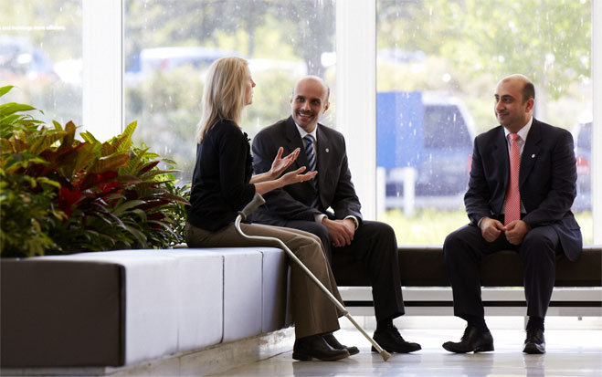
凭借我们的多元化供应商计划，江森自控 与 700 多家企业合作，这些企业均是注册在美国、属于少数族裔或妇女所有的企业，或被其所在国家认定为历史上未得到充分利用的企业。 120 多个客户向我们寻求季度或月度报告，以了解我们如何发挥不同供应商的作用。 我们论证充分的计划可为客户创造重大喜人的成果，并获得区域和国家的认可。
在 2015 年，我们从多样化供应商处进行的采购总计达 15 亿美元。
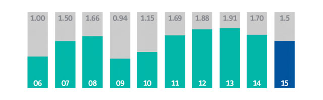
在与多样化供应商连续合作的第 12 个年度，江森自控取得了“亿万美元圆桌会议”组织成员身份，该组织由被选出的在与多样化供应商的业务往来中年度支出超过 10 亿美元的 17 家公司组成。
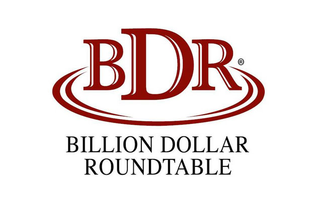
员工的健康和幸福感在江森自控的价值体系中占据核心地位，而工作场所安全性则是我们全球江森自控运营系统的支柱。 我们全球各地的运营都遵循着业界领先的标准。
·我们的全球运营系统定义并详细规定了职业健康和安全标准、管理系统、共享最佳业务实践以及行为工具和培训。 目标是树立零工伤文化。
·我们于 2015 年启动了环境、健康与安全管理系统 (EHSIS) 平台，强化报告和透明度。
·作为久负盛名的坎贝尔学院的创始成员之一，江森自控致力于分享解决方案和最佳实践，努力将环境、健康和安全整合到业务的方方面面（包括供应链）。
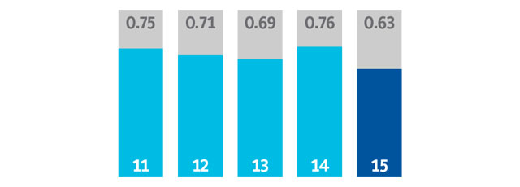
美国职业安全与健康管理局 (OSHA) 事故/200000 工作小时。
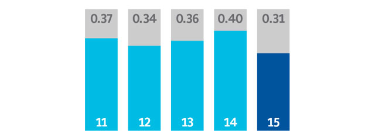
诚信是我们一切行为的核心，并促进我们不断取得成功。 我们意识到，无论身在何处或处于何种境况，我们都需要以正确的方式开展业务。 为达成这一目标，
·我们的职业道德政策提供清晰明确的行动指引。 每年有数万名员工完成在线和现场培训。
·我们的“人权和可持续性政策”重申了我们对可持续发展与良好企业公民的承诺。 江森自控是“联合国全球契约”的早期签署人之一，并致力于履行该契约的十大准则。
·此项政策还推动着全球计划的进展，例如，我们的反腐败和合规计划、社区参与计划及我们的环境管理目标。
·我们致力于负责任地通过整个供应链采购“冲突矿物”，并始终遵守基本的证券交易委员会法规。
在《企业责任杂志》开展的“最佳企业公民100强”排名中，江森自控位列第 17 位。
- 江森自控连续九年入选Ethisphere杂志颁布的“全球最具道德企业”榜单®
- 江森自控在中国被授予 2016“最佳雇主”。
- 江森自控连续第 11 年跻身全球和北美道琼斯可持续发展指数 (DJSI) 榜单
江森自控将可持续发展作为业务基石，我们很自豪能够被列入各项著名的可持续发展指数。
• 道琼斯可持续发展全球指数
• 道琼斯可持续发展北美指数
• 联合国全球契约的“全球契约 100”指数
• 泛欧交易所 Vigeo 世界 120 指数
• CDP 标普 500 气候绩效领导力指数
• FTSE4Good Index Series
• Calvert Social Index
• MSCI 全球气候指数和 MSCI KLD 400 社会指数，以及其他27个 MSCI 指数
• Maplecroft 气候创新指数
• STOXX® 全球环境、社会和治理（ ESG） 领袖指数
• 纳斯达克 OMX CRD 全球可持续发展 50 指数
• Ethibel 可持续发展指数
江森自控自 2002 年以来一直在报告可持续发展数据，我们详细的可持续发展报告遵循“全球报告倡议 (GRI)”的 G4 指导方针。 其他报告包括联合国全球契约进展情况通报 (COP) 及关于碳排放信息披露项目 (CDP)。 今年，在我们的倡议下，我们有 200 多家大型供应商设定了可持续发展目标、做出改善并向 CDP 供应链计划汇报。 法国船级社（Bureau Veritas）负责审计和认证我们的能源、温室气体排放、水和废弃物数据。
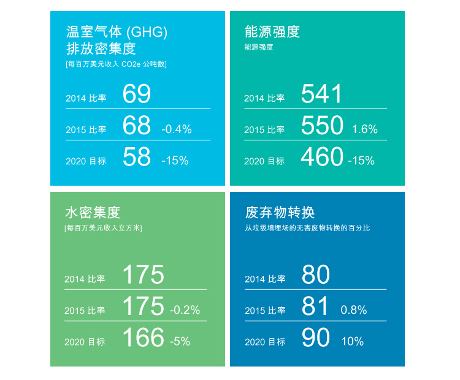
江森自控被认可的核心业务为提供可持续性的产品和服务，诸如能效和储能解决方案。 我们还运用可持续发展提升经营效益，并且团结其他重要的利益相关方应对可持续发展问题 - 包括参与 COP21，即将在巴黎召开的联合国气候变化大会。
由江森自控和美国能源协会共同赞助的第26届年度能源效率论坛，于华盛顿特区举行，重点讨论美国该如何充分利用创新能力成为“能效超级大国”。
军队设施、能源和环境助理部长 Katherine Hammack 向能源效率论坛的与会者介绍了美国军队实现更大能源弹性的使命。
“在企业供应链推行节能”，是我们的克林顿全球倡议行动承诺，这个承诺在一段时间的成功试运行后开始全面实施。 江森自控能源专家们访问了供应商工厂并针对发现和实施低成本/无成本能效改进措施为他们的内部团队进行培训。 美国节能经济委员会对承诺给予整体协调，包括招募制造合作伙伴、收集计划结果并向 CGI 报告进度。
作为世界经济论坛战略合作伙伴，江森自控成为入选的100家企业之一，为论坛提供必要支持，同时也是论坛社区和活动背后的推动力量。 江森自控董事长兼首席执行官 Alex Molinaroli 出任 WEF 汽车行业社区主席，同时还是能源与公用事业指导委员会成员，并担任“全球性别平等挑战”受托人。 副总裁兼首席营销
持续改善我们自身的环保足迹至关重要，江森自控 致力于通过卓越的产品和服务来帮助客户和消费者提升能源、水和资源使用效率，借此发挥更大的全球影响力。 以下是我们推进可持续发展的几种其他方式。
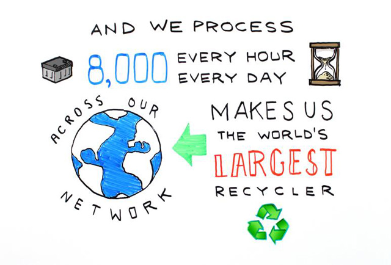
我们通过江森自控系统每小时回收 8,000 个电池。 我们自己制造的电池中有超过 80% 的成分是可回收的 – 这在全球任何类别的产品内都属于最高水平。
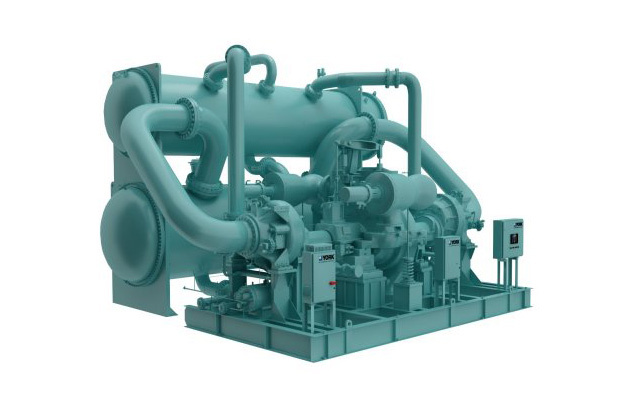
为了帮助中国家庭和企业将废热转化为清洁燃料，江森自控新型技术能够满足不断增长的集中供热需求，同时避免污染物的排放。 约克双汽轮机热泵从工业工厂或发电厂回收余热，产生高温热水，用来运转大型中央供暖设备 - 最多可降低 30%的耗煤量。
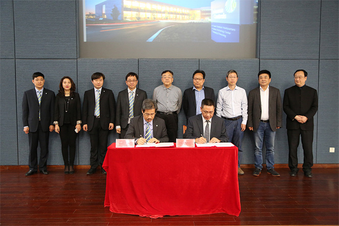
江森自控与中国浙江建科建筑节能技术 有限公司结成战略联盟，协助浙江省配合完成国家五年能源计划。 我们充分利用全面丰富的产品、技术和项目管理经验，联合浙江建科帮助客户获得 LEED 以及其他绿色建筑认证。
在江森自控 的帮助下，斯坦福大学开发出了新型中央能源设施，该设施帮助减少 15%的耗水量，预计可节省运营成本 4.2 亿美元。
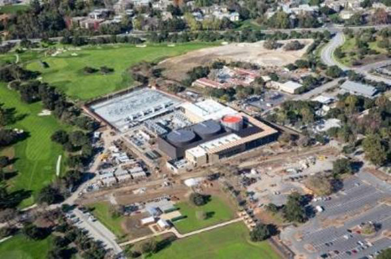